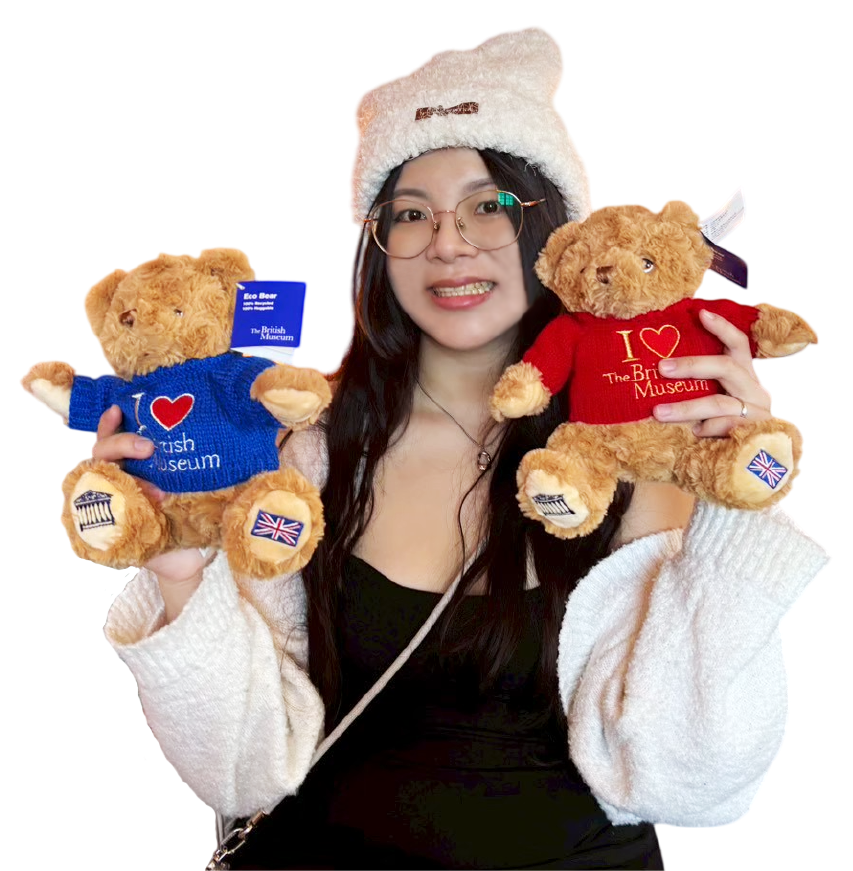
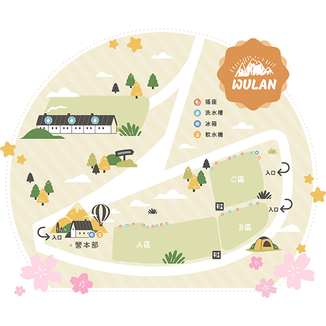
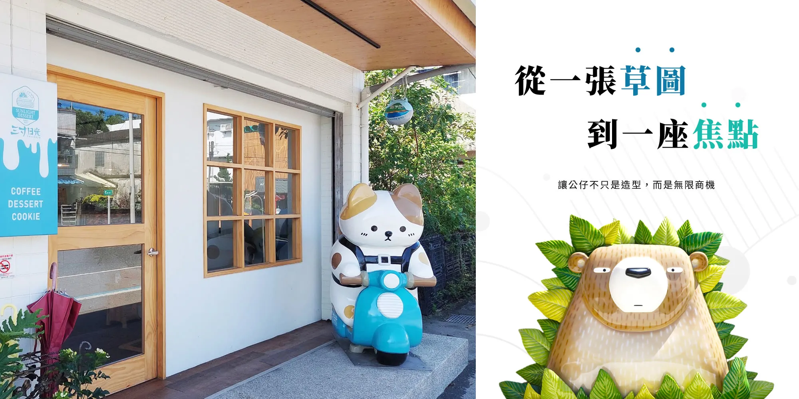

2016 - 2017 立麒數位文創有限公司 在學實習1年
2021-2026 揚京快客網路科技公司 在職5年至今
熟練CSS
精通html
我喜歡生活中各種美的事物，除了繪畫與設計，也喜歡穿搭、看展，平時會留意生活中的視覺細節。國中開始接觸繪畫，之後就讀五專多媒體設計系，逐漸走上設計道路。
工作探索過程中，我發現自己比起靜態設計，更喜歡具有互動性的事物，因此開始接觸網頁設計。工作期間學習 HTML、CSS，能獨立進行網頁設計與切版。面對 AI 快速發展，也會善用 AI 輔助工作，並依實際需求理解、修改與調整。
期望未來能持續學習，結合設計與網頁能力，協助公司提升視覺呈現與使用體驗。

